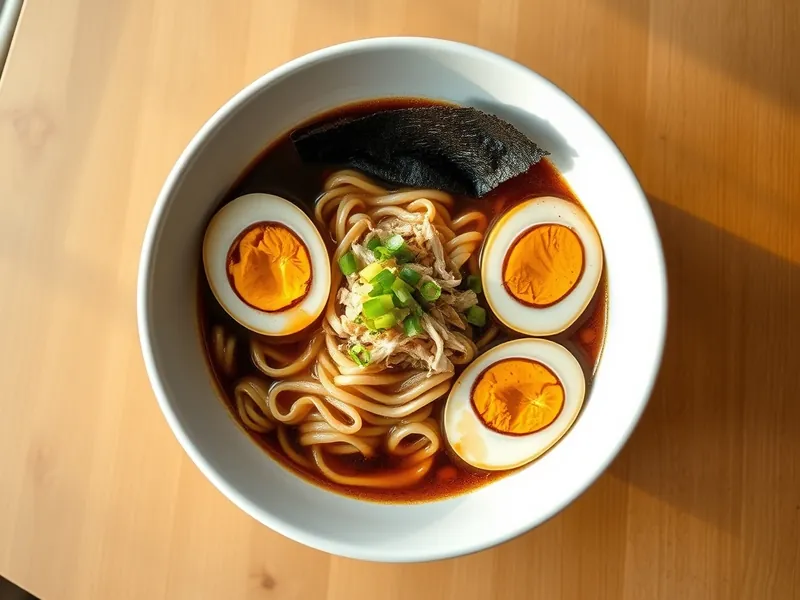

Быстрый рамен с курицей и яйцом в мешочек
Домашний рамен на бульонном кубике с яичной лапшой и вчерашней курицей
20 мин2 порц.551 ккал на порциюБ 45 · Ж 17 · У 56Азиатская кухня
Открыть в приложении: порции, таймеры, список покупок
Продукты на 2 порц.
- Яичная лапша150 г
- Курица готовая (осталась)200 г
- Яйцо куриное2 шт
- Бульонный кубик1 шт
- Вода900 мл
- Соевый соус2 ст. л.
- Чеснок2 зуб.
- Имбирь10 г
- Зелёный лук20 г
- Кунжутное масло по желанию1 ч. л.
- Нори по желанию1 шт
Как готовить
- Опустите яйца в кипящую воду и варите 7 минут на среднем огне, затем переложите в холодную воду и очистите.
- В другой кастрюле вскипятите 900 мл воды, растворите кубик, добавьте соевый соус, раздавленный чеснок и имбирь тонкими пластинками. Варите на слабом огне 5 минут.
- Отварите лапшу в отдельной кастрюле по инструкции на пачке, 4-5 минут, и откиньте на дуршлаг.
- Разберите курицу на волокна, положите в бульон и прогрейте 2 минуты. Выньте чеснок и имбирь.
- Разложите лапшу по мискам, залейте бульоном с курицей, положите половинки яиц, посыпьте зелёным луком и полейте кунжутным маслом.
Совет. Варите лапшу отдельно, а не в бульоне: так бульон останется прозрачным, а лапша не разбухнет. Желток в мешочек получается ровно за 7 минут из кипятка.